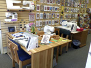
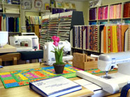
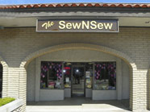

Address
160 North Glendora AvenueGlendora, California 91741
Telephone
(626) 852-2223Hours
Mon-Fri: 9am to 6pm
Tuesday: Usually until 8:30pm
Sat and Sun: 9am to 4pm
Website
www.thesewnsew.com


The Sew n Sew
Here at The SewNSew, we offer an extensive selection of fabrics from manufacturers such as Red Rooster, Hoffman, South Seas, Northcott, Robert Kaufman and Moda. You’ll also find a wide variety of kits, linens, sewing notions, books and patterns, along with sewing machines and accessories. Located in Glendora, CA, our store features a welcoming atmosphere, with a friendly, knowledgeable staff on hand to assist you with your every sewing and quilting need. We provide exceptional learning opportunities, including fun, informative classes for sewists of all ages, styles and skill levels. Whether you need help with fabric selection or choosing a machine that meets your lifestyle and budget, The SewNSew is your go-to source for high quality sewing products and exceptional service.
Map & Directions
View Larger Map
- Home
- Prize Winners
- Webmaster
- © Southern California Quilters Run 2016-17